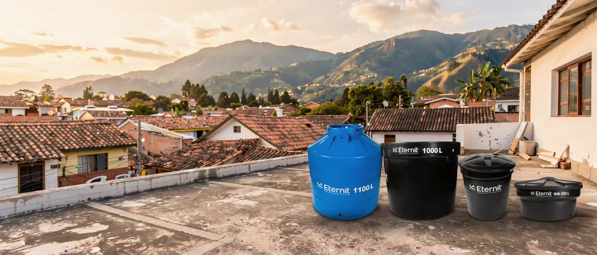
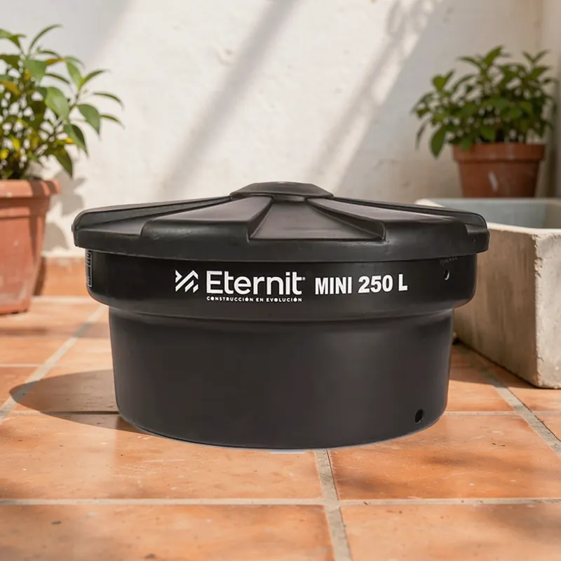
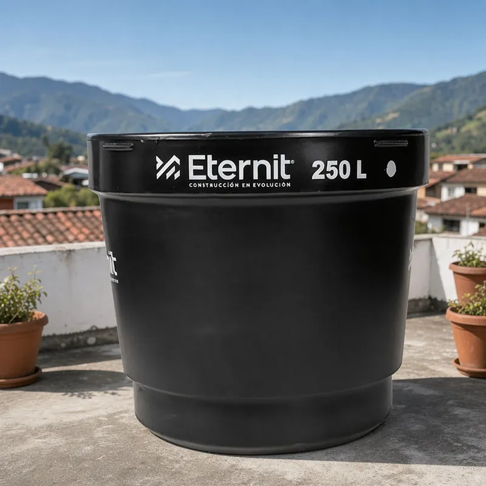
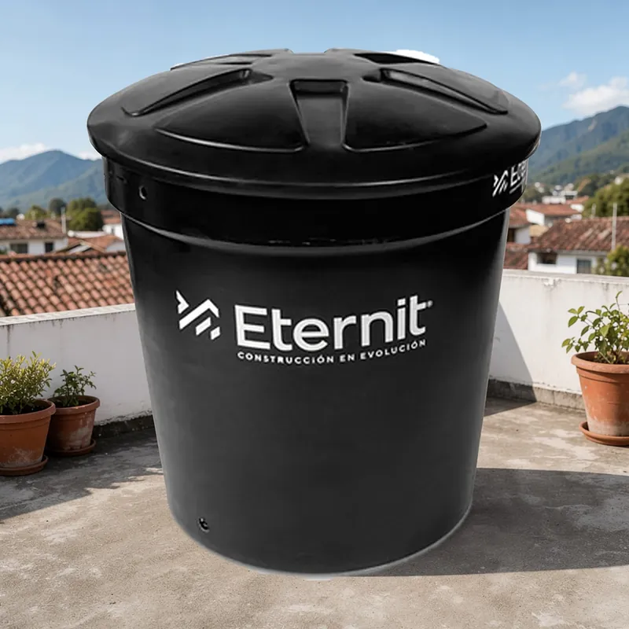
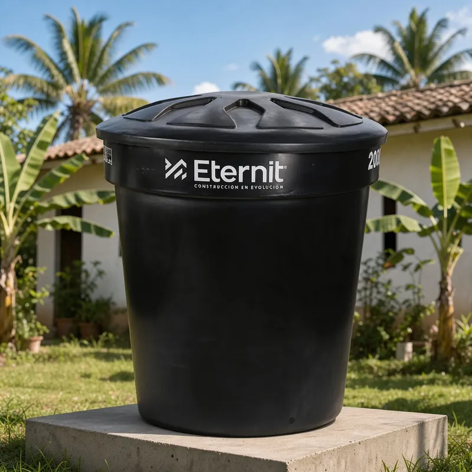
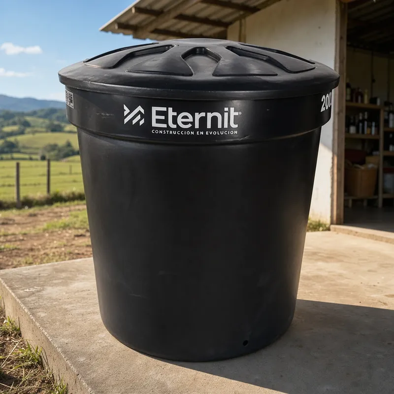
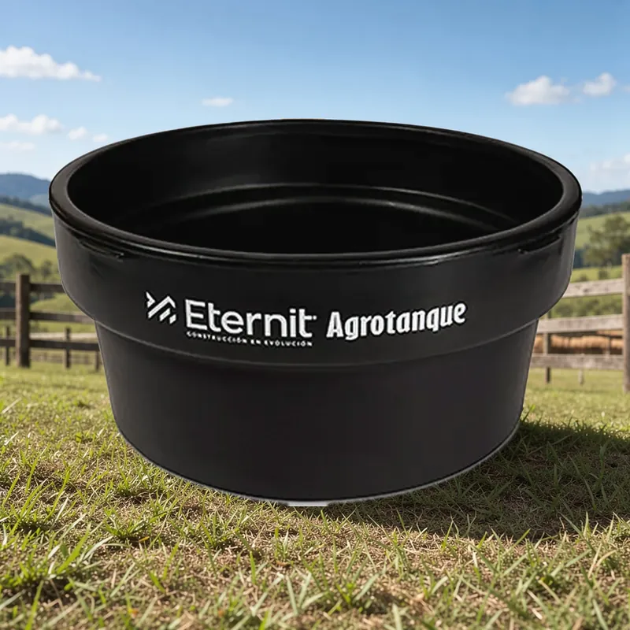
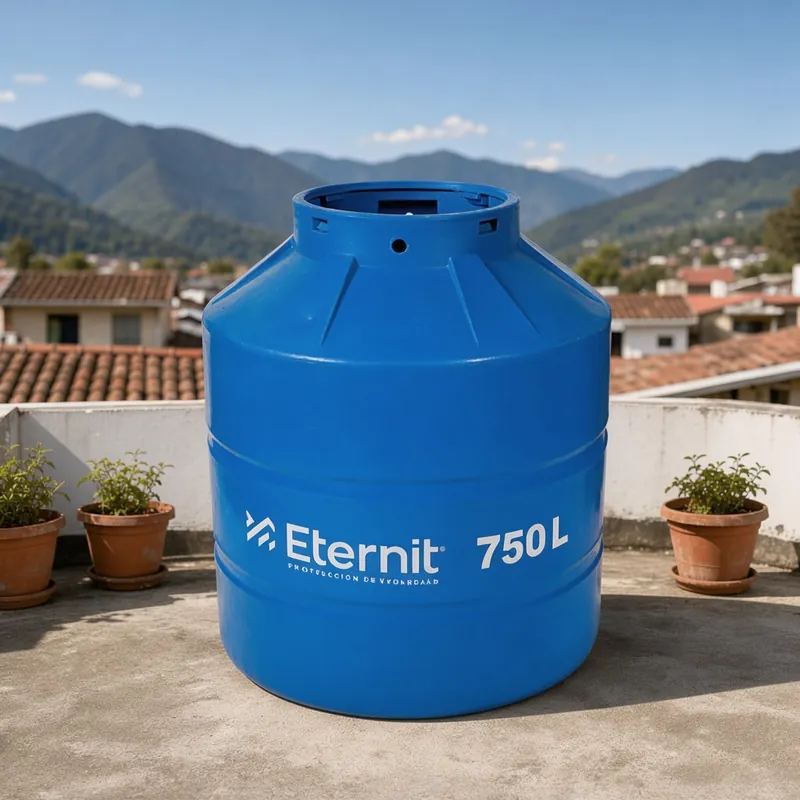
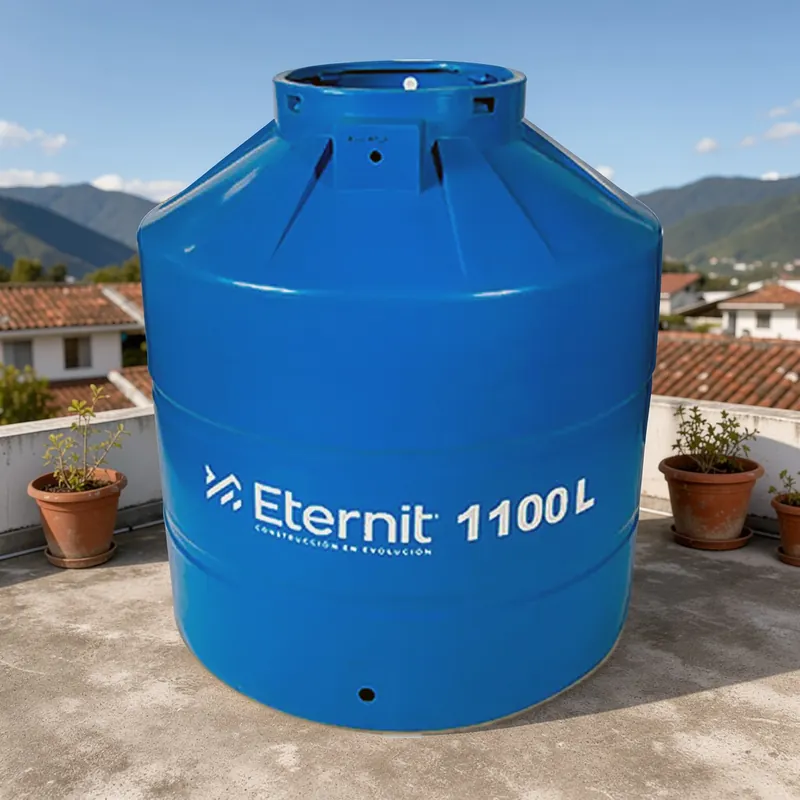

Línea agua
Tanques de agua
Eternit fabrica 11 soluciones de agua en polietileno: tanques cónicos de 250 a 6.000 litros, tanques tipo botella de 750 y 1.100 litros, el nuevo tanque traslúcido con indicador de volumen, el Agrotanque y sistemas sépticos para tratar las aguas residuales domésticas.
- 11 soluciones
- 250 a 6.000 litros
- Polietileno
- Indicador de volumen
- Grado FDA en botella
Tanques cónicos
De 250 a 6.000 litros, más Agrotanque, tanques traslúcidos y sistemas sépticos.
-

Tanques cónicos
Tanque Mini de 250 litros
Tanque de polietileno de la mejor calidad, liviano y resistente. Su diseño permite instalarlo donde falta espacio o altura, o en interiores cuando la estética arquitectónica lo requiere.
- Capacidad: 250 litros
- polietileno de la mejor calidad
- Liviano y resistente
-

Tanques cónicos
Tanque de 250 litros
Tanque de polietileno de la mejor calidad, liviano y resistente. Su diseño permite instalarlo donde falta espacio o altura, o en interiores cuando la estética arquitectónica lo requiere.
- Capacidad: 250 litros
- polietileno de la mejor calidad
- Liviano y resistente
-

Tanques cónicos
Tanque de 500 litros
Tanque de polietileno de la mejor calidad, liviano y resistente, especificado para exposición a la intemperie: soporta cambios fuertes de clima y el ataque de agentes atmosféricos.
- Capacidad: 500 litros
- polietileno de la mejor calidad
- Liviano y resistente
-

Tanques cónicos
Tanque de 1.000 litros
Tanque de polietileno liviano y resistente de doble capa: la exterior, negra o azul, bloquea los rayos UV; la interior facilita inspeccionar el líquido o evita el crecimiento de microorganismos.
- Capacidad: 1000 litros
- polietileno de la mejor calidad
- Liviano y resistente
-

Tanques cónicos
Tanque de 2.000 litros
Tanque de polietileno de la mejor calidad, liviano y resistente. No se corroe, no suelta partículas y tiene superficies lisas y fáciles de limpiar.
- Capacidad: 2000 litros
- polietileno de la mejor calidad
- Liviano y resistente
-

Tanques cónicos
Tanque de 6.000 litros
Tanque de polietileno de la mejor calidad, liviano y resistente. Su diseño incorpora tres anillos de refuerzo que mejoran su resistencia, estabilidad y durabilidad.
- Capacidad: 6000 litros
- polietileno de la mejor calidad
- Liviano y resistente
-

Tanques cónicos
Agrotanque
Tanque de polietileno de la mejor calidad que garantiza un producto liviano y resistente.
- polietileno de la mejor calidad
- Liviano y resistente
-

Tanques cónicos
Sistemas Sépticos
Sistema anaeróbico de tratamiento de aguas residuales domésticas: degradación controlada de la materia orgánica en cuatro etapas, con remoción de más del 80% de sólidos. Funciona por gravedad.
- Proceso de cuatro etapas
- Remoción mayor del 80% de sólidos
- Funciona por gravedad
-


Tanques cónicos
Tanques Translúcidos
Tanque traslúcido con indicador de volumen para inspección y control de inventario.
Tanques tipo botella
De 750 y 1.100 litros, con materias primas grado FDA para cuidar el agua.
-

Tanques tipo botella
Tanque tipo botella de 750 litros
Tanque tipo botella de polietileno de la mejor calidad, liviano y resistente, diseñado para cuidar y proteger el agua con materias primas grado FDA y doble anillo de refuerzo.
- Capacidad: 750 litros
- polietileno de la mejor calidad
- Liviano y resistente
-

Tanques tipo botella
Tanque tipo botella de 1.100 litros
Tanque tipo botella de polietileno de la mejor calidad, liviano y resistente, diseñado para cuidar y proteger el agua con materias primas grado FDA y doble anillo de refuerzo.
- Capacidad: 1100 litros
- polietileno de la mejor calidad
- Liviano y resistente
No encontramos productos con ese nombre. Pregúntanos por WhatsApp.
Ficha completa con calculadora
Tanque de agua: medidas a escala, peso lleno y calculadora.
Compara cada tanque con una persona de 1,70 m, mira cuánto pesa lleno y qué base necesita, y calcula el que te sirve según tu familia y tu espacio.
Abrir la ficha del tanqueCalculadora de reserva
¿Cuántos litros necesitas?
Cómo elegir
Cuatro preguntas antes de comprar.
Calcula tu consumo
Multiplica las personas por los litros diarios y por los días de reserva que quieres tener cuando falte el servicio.
Mide el espacio
Los tanques de 250 litros, incluido el Mini, están pensados para lugares sin espacio o altura suficientes, o para interiores.
Protege el agua del sol
El tanque de 1.000 litros tiene doble capa: la exterior, negra o azul, bloquea los rayos UV y la interior facilita inspeccionar el agua.
Controla el nivel
El tanque traslúcido tiene indicador de volumen para revisar cuánta agua queda sin abrirlo.
Agua
Preguntas frecuentes.
Actualizado:
¿Qué tamaños de tanques de agua fabrica Eternit?
Tanques cónicos de 250 litros (también en versión Mini), 500, 1.000, 2.000 y 6.000 litros, y tanques tipo botella de 750 y 1.100 litros. Además: Agrotanque, tanques traslúcidos y sistemas sépticos.
¿Qué tanque necesita una familia de 4 personas?
Con una referencia de 100 litros por persona al día, una familia de 4 consume unos 400 litros diarios: un tanque de 1.000 litros cubre unos dos días y medio sin servicio, y uno de 2.000 litros, unos cinco.
¿De qué material son los tanques Eternit?
De polietileno: son livianos y resistentes, no se corroen, no sueltan partículas y tienen superficies lisas y fáciles de limpiar.
¿Qué es un sistema séptico Eternit?
Un sistema anaeróbico que trata las aguas residuales domésticas en cuatro etapas: funciona por gravedad y remueve más del 80 % de los sólidos.
¿Para qué sirve un tanque traslúcido?
Para ver el nivel del agua sin abrir el tanque: tiene indicador de volumen para inspección y control de inventario.
Otras líneas